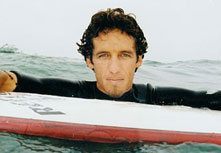

Surf Pro's
Rob Machado
Robert Edward Machado(born October 16, 1973 Sydney, Australia) is an American professional surfer from Cardiff-by-the-Sea, a community in Encinitas, California.
Machado attended San Dieguito High School, and is known for his casual, "laid-back" style both in and out of the water. Though he rides a modern tri-fin shortboard, he is still considered a "soul-surfer" because of his smooth cut-back style that has earned him the nickname "Mr. Smoothy". He is one of the best-known goofy-foot surfers in the world today.
Machado has won many of pro surfing's most prestigious contests, including Hawaii's Pipeline Masters (Triple Crown of Surfing), and the U.S. Open of Surfing, the largest surfing event held on the U.S. mainland. His 2006 win in that competition was only his latest at Huntington Beach, and it came on the heels of his victory at the 2006 Monster Energy Pro (also held at Pipeline) on Oahu's North Shore. Also, Rob was on the "West" team that won the 2006 Summer X Games surfing competition, called "The Game", held each year in Mexico.
He is now retired from the WCT (World Championship Tour), but was among the top contenders until injuries began plaguing him in the past few years. Nevertheless, he's finished in the top three of the world in the year-end rankings twice. Since retiring, he has concentrated on the big wave and barrelled surfing comps that he loves. The surfing magazines and his videos and films keep him in the public eye by showing his great skill.
Machado hosts and participates in an annual event held at his home reef called the Rob Machado Surf Classic and Beach Fair, which is an amateur competition for the locals of all ages, and he includes demo sessions along with other pros, as well as a lunchtime break he takes with kids to give them tips and pointers. The competition crowns a King and Queen of the Reef for the best overall performances in a combination of surf-related events over the weekend.
Currently, Machado is still frequently voted in surf magazine polls as readers' favorites , and has many sponsors, including Hurley, Reef, and Nixon. Machado is a very good friend of and served as an inspiration to quadriplegic surfer Jesse Billauer of the Life Rolls On Foundation.
Source:Wikipedia